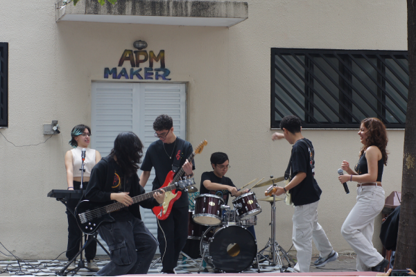
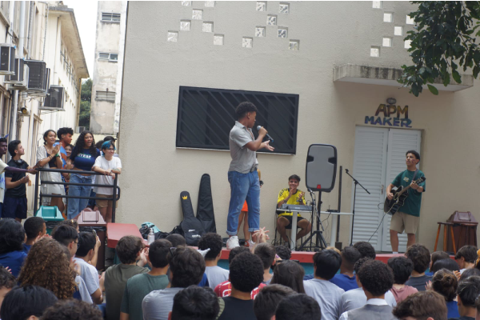
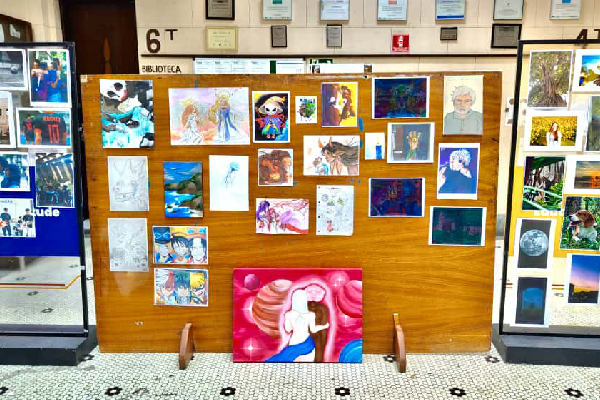
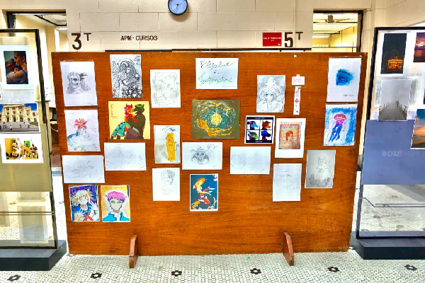

O Sarau é uma tradição etespiana onde os alunos artistas têm um espaço pra se apresentarem e mostrarem a sua arte pra escola, é um momento de prestigiar os amigos, de se divertir, de relaxar e de curtir as apresentações junto com seus amigos e colegas!! O Sarau também é uma forma de manter a arte viva dentro da Etesp.
Sarau

Todos são muito bem-vindos para participar!! Se você canta, toca algum instrumento, dança, gosta de recitar poemas (e até mesmo escreve), gosta de fazer mágica, ou qualquer outra coisa que você goste e queira apresentar, então venha participar desse momento incrível que a Etesp nos proporciona! Com cada vez mais pessoas participando do Sarau, esse evento fica cada vez mais lindo e mais emocionante. E fiquem tranquilos que algumas semanas antes do nosso tão aguardado Sarau, será divulgado nos grupos o link do forms de inscrição.

Caso você deixe a data passar ou simplesmente não quer se inscrever pro primeiro do ano, que será realizado no café dos bixos, não se preocupe!! Nós temos alguns Saraus, como por exemplo: o do dia da família, o que acompanha o final do interclasse, o da festa junina, entre outros; mas se você tem vontade, não deixe pra viver isso na última chance, porque você pode querer se apresentar de novo e não ter mais essa oportunidade incrível!!

E lembrando, você não precisa se apresentar sozinho!! Caso você queira se apresentar com um ou mais amigos, é só fazer a inscrição da dupla ou grupo seguindo as orientações do forms. Participar do Sarau também te traz amizades incríveis que vão estar ali antes e depois do seu momento no palco te apoiando, e que pode se tornar sua dupla de apresentação para o próximo, quem sabe?


Participar do Sarau também te traz amizades incríveis que vão estar ali antes e depois do seu momento no palco te apoiando, e que pode se tornar sua dupla de apresentação para o próximo, quem sabe? Então venham participar desse momento especial com a gente, seja prestigiando ou apresentando!!
EtespArt
Você se considera uma pessoa criativa? Alguém que se arrisca a tentar a mão nos meios artísticos? Se interessa em aprender e tentar trabalhar sua capacidade produtiva? Então conheça o Etesp art. O Etespart é o grupo etespiano direcionado aos artistas de todas as áreas, criando um espaço para crescer, compartilhar trabalhos e aprender juntos.

O Etespart é o grupo etespiano direcionado aos artistas de todas as áreas, criando um espaço para crescer, compartilhar trabalhos e aprender juntos. Não importa se você é músico, poeta, dançarino, pintor, desenhista ou escultor, toda forma de expressão artística é bem vinda e celebrada! O grupo funciona principalmente pelo grupo do WhatsApp, sendo um local para compartilhar novos trabalhos, discutir técnicas, pedir conselhos, apresentar oportunidades etc, mas também acontecem eventos e atividades fisicas, como o sarau, as exposições e a semana da primavera, e divilgaçoes virtuais como o ecoetespiano.

É o lugar perfeito para conectar-se com pessoas semelhantes, se abrir e crescer, mostrando que a arte não só é o espelho da alma como também do esforço e da paixão